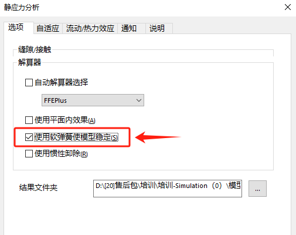

Simulation-对称约束
有一轮缘承受轮毂过盈配合的压力作用。本例的目的是求出这两者中的如下应力:
新建
打开wheel assembly装配体，其零部件材料已经是在零件材质里定义好了
接触
这里需要注意下干涉处理，划分网格时存在干涉则会提示你进行检查。本次案例里的孔轴配合是“过盈配合”，所以我们选择“否”，使用【连结-相触面组】里的“冷缩类型”来处理干涉问题。

所以需要在【划分网格】前，对接触进行编辑：右键【连结-相触面组】，在接触条件中可以选择【冷缩配合】
对称
右键【夹具-高级夹具-对称】
这里需要留意：当只有对称时，模型在空间中会类似太空的悬浮状态。此时的运行计算会提示缺少约束。因此我们还需避免模型微小移动。这里提供两种方法处理：
方法1：使用软弹簧，消除刚体模式
方法2：右键【夹具-高级夹具-使用参考几何体】，在刚体移动位置设置成0。
载荷
在没有外力施加到模型的情况下，冷缩配合也将在零件中产生应力。这些零件在起初都存在过盈配合。
划分网格
在【网格参数】下选择【基于曲率的网格】，按默认设置生成网格。
运行结果
应力&位移
显示对称结果
修改坐标系，定义圆柱坐标系。在局部坐标系中图解显示结果。
总结
在分析中，仅仅当接触条件为【冷缩配合】时，装配零部件间才允许存在干涉。
想要更好地查看【冷缩配合】条件下的分析结果，最好变形比例设为1:1。使用爆炸视图观察在接触面上的结果，如图4-21所示。对于轴对称部分的结果，最好采用圆柱坐标系显示。
除了von Mises应力，上述这些观察到的结论可专门应用于应力分量。作为一个标量值，vonMises应力不受所选择的参考坐标系的影响。
为避免刚体运动，模型必须在轴向保持稳定。最直接的方法是在每一模型的顶点施加轴向约束。还可以通过【使用软弹簧使模型稳定】选项(即使用一层软弹簧围绕该模型)来提供一个无约束方向上的最小刚度。
.
其他
消除刚体模式
本章前面部分介绍了阻止沿装配体轴向的刚体运动的方案，至少rim和hub上的一顶点必须施加轴向约束。如果没有这些约束，装配体沿轴向将只有零刚度。
现在将提出两个别的方案，来阻止没有两个顶点约束的模型的刚体运动。它们是使用【软弹簧】或【惯性卸除】
1软弹簧
这里不希望模型由于某些外部载荷的作用而沿轴向摆动。本例中冷缩配合接触条件的所有载荷都是平衡的。然而有限元方法并不认可这个事实，一个小的精度问题、数值错误或网格的不对称都会使模型在轴向产生不可控的刚体运动。所有这样的情况都可以通过软弹簧选项来稳定。
当该选项激活时，模型被带刚度的弹簧包围，弹簧的刚度相对于模型的刚度可以忽略不计(见图4-17)。有限元模型被稳定下来，所有的刚体运动被约束。
只要模型是自平衡的，或外部载荷的净值很小以至于软弹簧能够抵消时，上面的过程就是有效的。
2惯性倒除
另一种避免刚体运动的方法称为惯性卸除。该选项不像使用软弹簧中通过添加人造刚度来抵消不平衡载荷，而是添加人造平衡载荷来消除沿着无约束方向的载荷。
在重力、离心力或某些热力载荷已定义时，该选项不应当用作稳定分析的目的。
在本章例子中，【使用软弹簧使模型稳定】和【使用惯性卸除】选项都可以使用。
在仿真树算例【右键-属性】，在选项中，激活【使用软弹簧使模型稳定】选项，并选择【Direct sparse】解算器，然后点击确定。运行分析
虚拟臂
【相触面组-虚拟臂】
均布载荷
分析实例:桌面放置物体
问题描述:考察桌子正中间放置一个质量为44.6kg的长方体，考察桌子的变形情况。材料:合金钢
材料参数对计算结果影响
弹性模量
泊松比
密度
屈服强度
最大位移
最大应力
安全系数